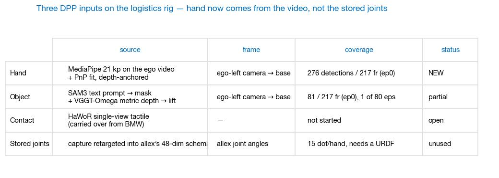
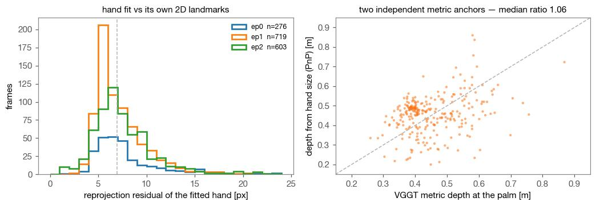
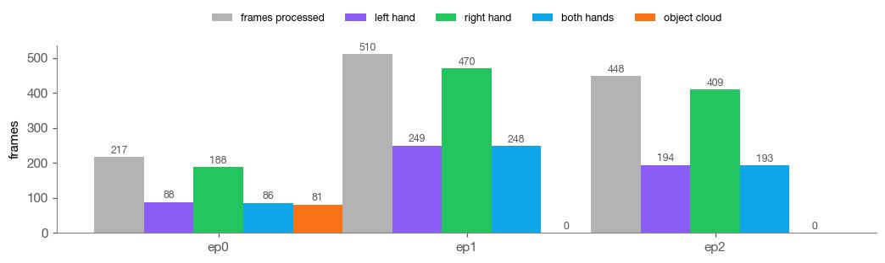

Frontier Demo train data in 3D: human hand + object points
BMW & Frontier Demo · logistics · what the policy would actually consume
Lab meeting
2026. 09. 01
Presented by beomjun
Overview
[TL;DR] Human hands come from the video, not the stored joints.
- Done: 21-kp hands, three episodes
- Done: hand + object, one frame
- Discuss: batch size · handedness · intrinsics
object orange · left hand purple · right hand green · hollow ring = the stored (retargeted) wrist · v3/human_hmd_new
Method (1): Why the video, not the stored joints
The stored hand block is retargeted allex angles behind a missing URDF.
- Capture: human wearing a Quest
- Schema: allex joints, angles only
- No external camera exists anywhere

verified across all 79 frontier_demo datasets and 30 raw capture sessions: two ego streams, no external view
Method (2): Lifting the hand to metric 3D
Shape from the tracker, metric scale from depth, one camera frame.
- MediaPipe 21 keypoints per hand
- Perspective fit to the landmarks
- Scale anchored on VGGT depth

hands run on CPU, no cluster · object points come from the 08-30 SAM3 + VGGT-Omega pass
Results
- Hand and object in the ego view
- points projected into the ego-left camera
- hollow ring = stored wrist, for comparison
- 3D structure at one timestep
- The same pipeline on every episode
same two-panel grammar as the BMW record, so the two rigs read side by side
Results
- Hand and object in the ego view
- 3D structure at one timestep
- rotates about the fitted support plane
- frame chosen where the hand is nearest
- The same pipeline on every episode
support plane = smallest-eigenvalue eigenvector of the object cloud, oriented toward the camera
Results
- Hand and object in the ego view
- 3D structure at one timestep
- The same pipeline on every episode
- static base frame, hands plus ep0 object
- object lifted for 1 of 80 episodes

ep1/ep2 have no depth pass yet, so their hand scale uses the fit validated against VGGT on ep0
Discussion & Action items
Three decisions; silence means the recommendation stands.
Discussion:
- Extraction batch — pilot 5 vs all 20 episodes → 20, one array job, spec before submit (owner)
- Handedness — tracker label vs stored wrist → stored wrist, colours need one eyeball (owner)
- Intrinsics — VGGT estimate vs the Quest calibration → settle before any training h5 (owner)
Action items:
- Confirm hand and object read correctly (owner · today)
- Object extraction on the agreed episodes (agent · after go)
- Contact from the ego video, HaWoR (agent · after batch)
- Human-hand DPP h5 for training (agent · after batch)
Appendix · evidence paths · references · cut list
- Hand
- viz/hand_from_video.py → viz/cache/ep{0,1,2}_hands.npz (21 kp, ego-left camera frame)
- Render
- viz/frontier_handobj.py (port of mano_run101_work/viz_handobj2.py) · viz/hands3d_multi.py · viz/deck_figs2.py
- Object
- /virtual_lab/sjw_alinlab/beomjun/hmd_object_demo/ep0/{sam3/masks.npz,vggt/vggt.npz}
- Data
- /rlwrld2/home/aaron_jeong/frontier_demo/v3/human_hmd_new/train_no_subtask (robot_type=allex, sources allex_p2_teleop_*)
- Intrinsics
- VGGT median fx 709.4 fy 714.3 (1280×720) vs Quest calibration.json fx 863.8 (1280×1280) — unresolved
- Index map
- mask index j ↔ parquet row 2j ↔ video frame 2j (pixel-identity checked against sam3/prev)
- MediaPipe Hands 21-keypoint topology · SQPnP perspective fit · VGGT-Omega self-calibrating metric depth
- BMW counterpart, same two-panel grammar: base + augmentation
- Rig and frame convention: logistics rig & frame
Cut: allex FK hand keypoints (URDF not located; superseded by the video route) · per-frame contact · stored-vs-video wrist agreement statistics · human_umi column · the 63.5 mm Quest baseline vs 66.4 mm measured discrepancy.